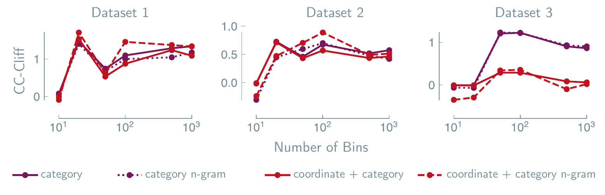

arXiv:2406.17295 · 2024
Less can be more for predicting properties with large language models
Affiliations
1 Laboratory of Organic and Macromolecular Chemistry (IOMC), Friedrich Schiller University Jena, Humboldtstrasse 10, 07743 Jena, Germany
2 Lila Sciences (work done while at Intel Labs)
3 Center for Energy and Environmental Chemistry Jena (CEEC Jena), Friedrich Schiller University Jena, Philosophenweg 7a, 07743 Jena, Germany
4 Helmholtz Institute for Polymers in Energy Applications Jena (HIPOLE Jena), Lessingstrasse 12-14, 07743 Jena, Germany
5 Jena Center for Soft Matter (JCSM), Friedrich Schiller University Jena, Philosophenweg 7, 07743 Jena, Germany
"LLMs consistently fail to capture coordinate information while excelling at category patterns."
A benchmarking study of how language models handle crystal structures, using synthetic datasets and MatText, an open framework for representing materials as text.
Read the full abstract
Predicting properties from coordinate-category data — sets of vectors paired with categorical information — is fundamental to computational science, manifesting in materials science as predicting formation energies or elastic moduli from crystal structures. While large language models (LLMs) have increasingly been applied to such tasks, optimal strategies for achieving reliable predictions remain elusive. Here, we report fundamental limitations in LLMs' ability to learn from coordinate information in coordinate-category data. Through systematic experiments using synthetic datasets with tunable coordinate and category contributions, and a comprehensive benchmarking framework (MatText), we find that LLMs consistently fail to capture coordinate information while excelling at category patterns. This geometric blindness persists regardless of model size (up to 70B parameters), dataset scale (up to 2M structures), or text representation strategy. For materials property prediction tasks dominated by structural effects, specialized geometric architectures consistently outperform LLMs, as evidenced by a clear "GNN–LM wall" in performance benchmarks.
1. Introduction
Large language models have matched or exceeded expert performance across scientific domains, prompting their use for materials and chemistry property prediction. But this data typically mixes coordinate information (positions) with category information (discrete labels, like atom type) — and it is unclear whether a language model can learn the coordinate half at all. We show that Transformer-based models, causal and masked alike, systematically fail to learn from coordinate information in coordinate-category data while excelling at category patterns — a gap that persists across architectures, scales, and training strategies.
2. Results
2.1 Probing LLMs with coordinate–category information mixtures
We built synthetic datasets where each point has 3D coordinates (like atom positions) and a categorical label (like atom type), then computed target values with a hypothetical potential that lets us dial the balance between the two:
E(α) = α · Ecategory + (1 − α) · Ecoordinate, α ∈ [0, 1]
(1)At α = 0 the target depends only on coordinates; at α = 1, only on category. We swept α from 0 to 1 and fine-tuned BERT to predict the target at every step.
Real data has both. The open question is whether a language model uses the coordinate half, or quietly discards it.
We call a model's error on coordinate-heavy tasks (α near 0) the coordinate contribution (CoC), and its error on category-heavy tasks (α near 1) the category contribution (CaC). When CoC exceeds CaC, we call this the Coordinate–Category Cliff (CC-Cliff).
Drag the mix
At α = 0 the target depends only on geometry. At α = 1, only on composition. Drag to see where each model's error actually sits.
Near the balanced midpoint, both families sit closer to their own best case.
Across every dataset we tested, CoC is consistently and significantly larger than CaC for language models — a clear bias against coordinate information. A graph-based model (CoGN) shows the opposite pattern, and a descriptor-based one (MODNet) sits near zero: the cliff is a property of the architecture, not the task.
2.2 Comparison with n-gram models
To probe the source of this gap, we ran the same experiments with n-gram models — motivated by prior work showing some LLM behaviors can be explained by treating them as n-grams — while also binning the coordinate-distance term into an increasingly fine-grained classification problem.
n-gram models track fine-tuned language models closely across the datasets we analyzed. In principle n-grams can't capture positional information without combinatorially many samples, since encoding positions inflates the token vocabulary by many orders of magnitude — so this tracking suggests language models lean on superficial pattern-matching rather than real geometric understanding, consistent with an attention analysis showing coordinate information isn't meaningfully used at prediction time.

2.3 Implications for materials property predictions
These findings have practical implications. We built MatText, an open framework for representing materials as text, to test them across representation, scale, and architecture.
Representation. MatText implements many text representations, from bare composition to full 3D coordinates. Adding more geometry rarely helps: SLICES outperforms CIF P₁ on every property we tested, and Local-Env matches fully geometric representations for the elastic moduli.
Scale. We ablated dataset size (30K → 2M structures) and model size (7B → 70B parameters) across more than 2,000 training runs. Both move RMSE by single digits at most — nowhere near enough to close the gap with GNNs.
The GNN–LM wall. Scanning the MatBench leaderboard, the pattern holds beyond our own experiments: GNN-based and language-based approaches segregate almost perfectly, with language models consistently at the high-error end.
3. Discussion
Language models systematically fail to learn coordinate information in coordinate-category data — a failure that persists across architecture, scale, and training strategy, and that neither more data nor more parameters fixes. They behave like n-gram statistics: fluent with categorical patterns, blind to the geometry. The path forward isn't a universal model, but matching the right architecture to the right problem — language models for compositional patterns, geometric networks for spatial ones.
4. Code & data availability
MatText is MIT-licensed, documented, and archived on Zenodo; datasets are on Hugging Face.
from mattext.representations import TextRep representation = TextRep(structure) # the same crystal, nine ways text = representation.get_requested_text_reps( ["composition", "slices", "cif_p1"] )
How to cite
Alampara, N., Miret, S. & Jablonka, K. M. Less can be more for predicting properties with large language models. arXiv:2406.17295 (2024).
@article{alampara2024lesscanbemore,
title = {Less can be more for predicting properties with large language models},
author = {Alampara, Nawaf and Miret, Santiago and Jablonka, Kevin Maik},
year = {2024},
journal = {arXiv preprint arXiv:2406.17295}
}